This webpage reflects my personal experience and opinions regarding an incident involving my vehicle. All statements are based on my own recollection, documentation, and supporting materials available to me at the time of writing.
The information presented is provided for informational purposes only and should not be interpreted as a statement of fact about any individual or organization beyond my personal experience.
I make no claims beyond what I have directly observed, documented, or experienced. Any conclusions expressed are my own. Readers are encouraged to independently verify any information.
I am writing about my recent incident with my brand-new 2024 Chevrolet Equinox EV RS. Just less than a year after purchase, on June 19, the vehicle experienced a catastrophic mechanical failure. While my wife was returning home with our son from an after-school program, the front left tie steering rod broke completely during a slow turn into the entrance of our underground parking. My wife also saw a message on the dashboard about low tire pressure. There was no impact, accident, or collision involved. Immediately afterward, the wheel became misaligned, the tire detached from the rim, and the car became immobilized, blocking the only entrance and exit to the building’s underground garage.


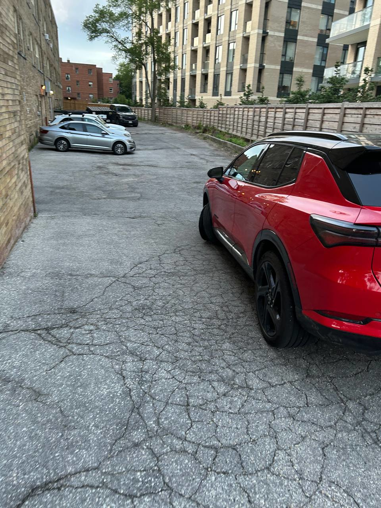
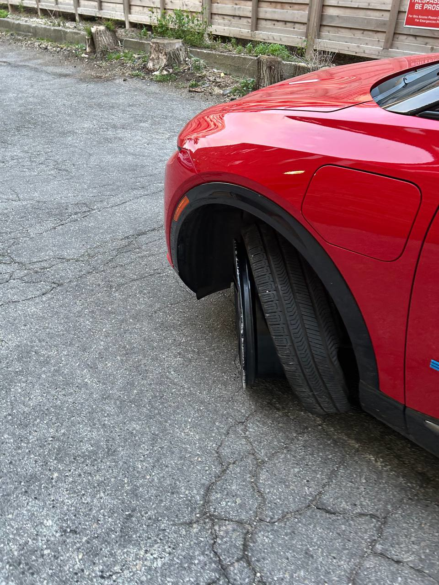
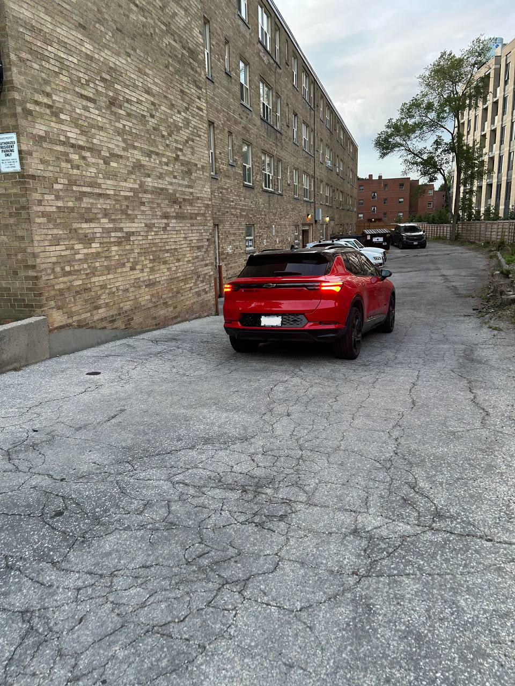
We contacted Chevrolet Roadside Assistance right away and submitted a full report about what happened, and provided details such as the type of vehicle and the VIN as well. I warned Chevrolet Roadside Assistance several times that we have an electric vehicle, so we need a specialized tow truck. The operator from Roadside Assistance told me that the ETA could be a bit longer than usual because it is an electric vehicle and they need to find a special tow truck. I have confirmation that my request for a flatbed tow has been received.
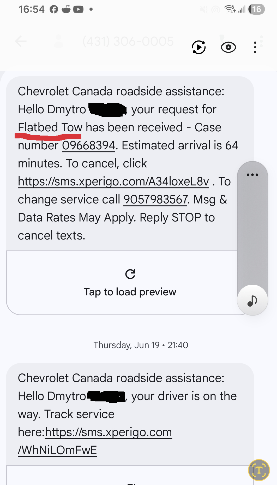
During the wait for the tow truck, my wife received several complaints from tenants that they were unable to park and exit because our vehicle was blocking the entrance, so my wife was forced to pay for parking outside for the tenants. It took 5 hours for the tow truck to arrive. It was a third-party CAA tow truck, since Chevrolet Roadside Assistance relies on third parties. And it was not a flatbed tow truck. Because of that, the CAA tow truck employee said that because of lack of clearance, he could not approach our car from the front side to pick it up, so he could not tow our car and it could cause more damage to our vehicle. He called his supervisor. After a conversation with the supervisor, the driver transferred his phone to the supervisor, and I was asked to sign a waiver saying that if it is a manufacturer's defect, all damage will be covered by the dealership. So we agreed, and the CAA employee started to tow. We reversed the car on a bare rim back to the road, and the CAA employee guided the broken left front wheel with a breaker bar while we drove in reverse. After we brought the car back to the road, it now had room to approach from the front end. He lifted our car from the front side and dragged the vehicle back about 10 meters, then forward to align with the road about 10 meters, and only after that did he put the rear wheels on the dolly. This matters because according to the General Motors Emergency Manual, towing should only be by a flatbed tow truck, and even transporting on dollies may cause damage not covered by warranty.
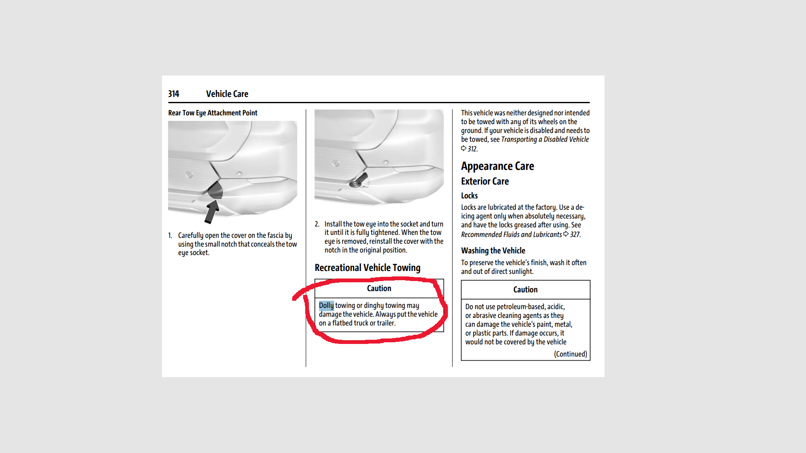
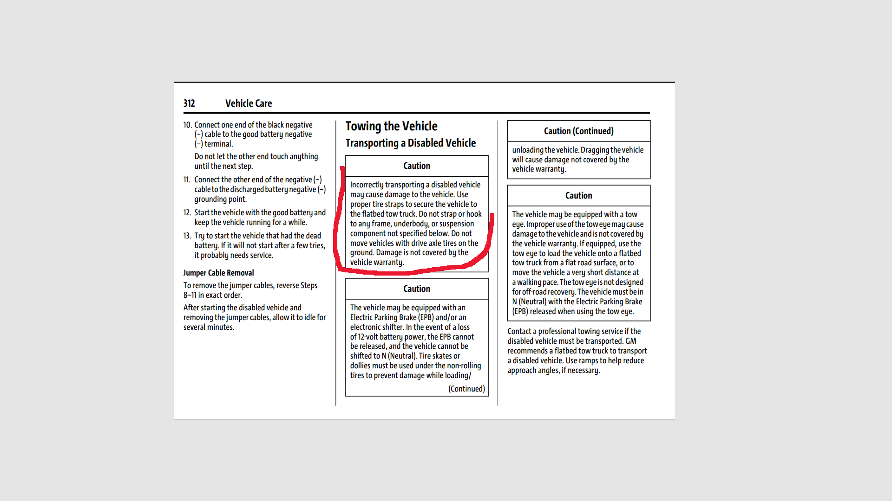
(photo of snapshot of GM manual about towing) The CAA tow truck brought our vehicle to Old Mill Chevrolet Cadillac GMC Buick dealership, 2559 St Clair Ave W, Toronto, Ontario, M6N 4Z5.
Next day / dealership visit
Next day, Friday, June 20, I went to the dealership. I talked with a service associate that my vehicle was outside with a broken front left wheel. He confirmed that it will be covered by warranty, and that it could happen because the vehicle is heavy (usually more than a regular gas vehicle by 30–50%). I asked for a loaner because we were left with no car. He directed me to the rental representative, and he assured me that all costs will be covered for damage and rental by the manufacturer. So he directed me to the Enterprise rental representative. We signed the contract that all expenses are on the dealership and they gave me a rental car, a Cadillac XT5.
On Saturday, June 21, I received a call from Old Mill dealership that cost of repair will be approximately $4,000 CAD. I disagreed to repair at my cost, because I was pretty sure it is a warranty case, and I would proceed with GM to cover the expenses.
GM Customer Care / Chubb
On June 20 I called GM Customer Care and opened a case about the incident. I filed a complaint about the broken tie rod that caused more damage to the rim and tire. I provided all the photos and videos that I have to support the investigation. They involved a third-party Chubb insurance company. From that point, I was dealing with Susan from Chubb Insurance. They sent their representative to inspect the vehicle and the site where it happened. The investigator came two weeks later, on July 4. He asked a couple of questions to my wife. Also, he took several photos of nearby areas. Also, he pulled the data from my car computer. The data showed no sign of abnormal events, which proves that there was no impact, collision, or anything. My wife told me that he's asked a question with prepositions like “Are you sure you didn't hit anything down the road…’? etc After a few weeks, we wrote a follow-up letter to Susan (Chubb Insurance) about any updates regarding our vehicle. We received the response from her: “Based upon available information, including the inspection of the subject vehicle, GM was unable to rule out that the damage to the left steering tie-rod was a result of the impact. Further, the damage to the subject vehicle, including left wheel, rim and tire also showed signs of damage which is consistent with a blunt impact. Attached are some photos that corroborate this information.
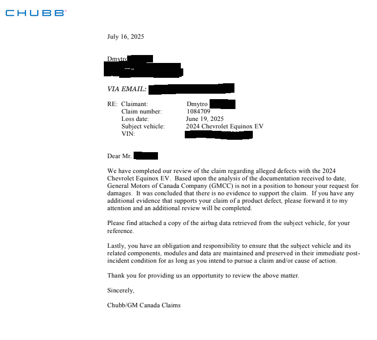
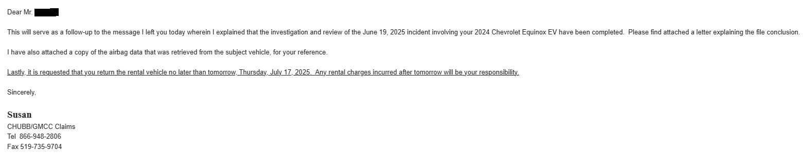
At this time, the case has been closed. If you have further questions about this incident you can contact your auto insurer, Transport Canada or an attorney.” I asked for a report, but they delayed to answer. I talked one more time with Susan over the phone and she kept repeating that it was “impact.” I asked her to provide evidence that it was impact and who made this determination, and based on what information. The photos were taken after towing that damaged my car, and they ignored that and did not address it at all. I wrote an email to Susan that they have to provide some report explaining the decision. But she completely refused to send me anything by email. Over the phone she repeated more than 10 times that it is impact and no warranty. After a couple letters from me that we will proceed with CAMVAP and other institutions, they sent us a brief report, just a plain document.
After warranty denial: CAMVAP + dealership + rental
When I realized that we had to pay out of pocket more than $7,000, I submitted the case to CAMVAP about the broken tie rod and unreasonable warranty denial. From that moment, I had to deal with Old Mill Cadillac. I shared my customer experience. The investigation from the time it happened until I got the denial took more than 30 days. With the warranty denial, they requested that I return the rental car, further expenses will not be covered by GM. The next day I returned the car to the dealership. Two days after I received a call from Enterprise that the cost of the rental would be around $1,100. I was surprised because I had a contract that says all costs are on the dealership. So I disagreed to pay and asked them to contact the dealership.
After 2 months, they charged my CAA credit card without any notification, up to $2,000, despite the initial cost I was told being around $1,000. So I had to dispute this transaction with my CAA bank. To my surprise, CAA bank allowed a business to charge the credit card without direct authorization — even from a blocked credit card. They charged my credit card after 2 months; at that time, I had lost it and blocked it, but the transaction still went through. A CAA representative explained that despite my card being blocked, Enterprise still had a valid payment token to charge my account, not even the card…so basically they can withdraw all money from my account because once i gave them authorisation. In my opinion, this raises a serious concern that businesses may be able to keep payment tokens active with no clear expiration and charge later without a fresh confirmation from the customer.
Back to dealership: forced repairs + invoice language
Because my car was sitting in the dealership for around a month, we agreed to repair our broken car ourselves. During that time, since they denied the warranty, the dealership put pressure on us to pay or take the car out of the dealership. After a couple of days of negotiation, I looked for another shop to repair our car, but with transportation, it did not seem worth it. Even Canadian Tire does not work on these EV cars. So after struggling to find an alternative, I had to agree to the repair for $7,000. We made the deposit so the dealership could proceed with the repair. We asked for the ETA. The service manager said that if they have parts it will be 1–2 weeks. Worth noting: in the invoice for repair, next to each position they wrote: “damaged due to impact.” I did not pay close attention at first. But later, when we tried to deal with the warranty, GM Customer Care used this as “dealership report” — like “see, even the dealership wrote due to impact.” So we went to the dealership and asked: Did they inspect the car before towing? How do they know it was an impact? They tried to avoid a direct answer, and after hours of arguing and conversation with the general manager of the dealership, they agreed to rewrite the invoice in plain language without any assumption about the nature of the damage. Total wait for repair was more than 2 months — almost the entire summer my car was in the dealership waiting for parts to arrive.
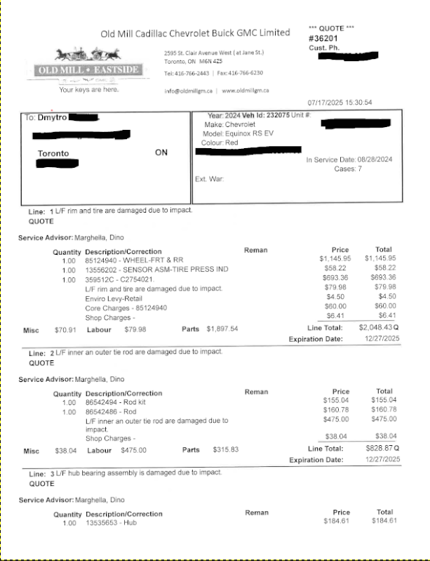
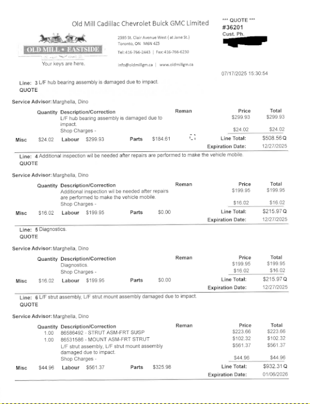
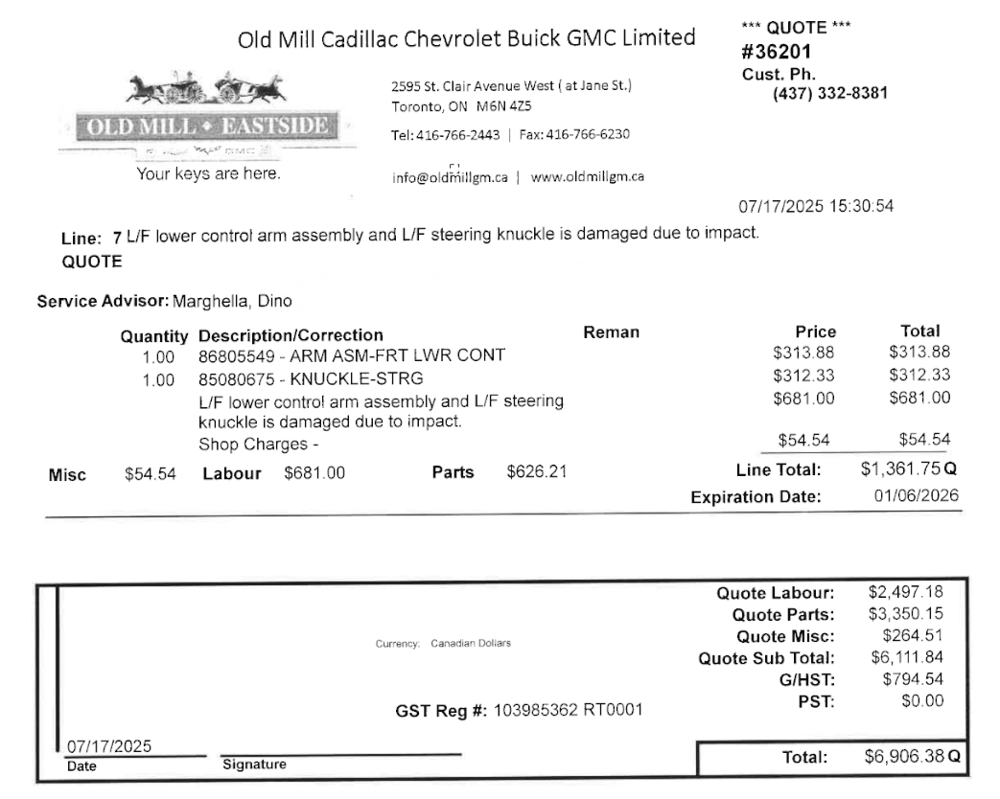
Pickup problems: wrong tire installed
When I got the call that my vehicle was ready to pick up, it was Friday. I came to the dealership and realized they installed, instead of a tire damaged from towing, a 2.5-year-old tire. I asked why. No one could give me the answer. Despite that I paid as for a brand-new tire, the vehicle is 2024 and the tire they put was 2022 — older than my already used 10-month tire. They promised to replace it, but we had to come next week. So we did.
Transport Canada / MTO case
During this, I contacted and opened a case with MTO / Transport Canada (Ministry of Transportation / Transport Canada). I told the whole story. The field investigator came to the dealership to see the car. After seeing the car, she was surprised to see the broken tie rod bent in 3 places, despite the body being intact, and the cost of repair being $7,000 only for the snapped tie rod. She questioned how a snapped tie rod could result in up to $7,000 of repairs. During conversations with MTO / Transport Canada, the field investigator was willing to help and take the broken tie rod to Ottawa to do lab analysis. We agreed that I would provide all broken parts for further investigation. But after we picked up the car, I called her and she said there was no need to take the parts. She called the Ottawa lab and based on the photo, they determined that there is no defect, so they will not investigate further. They reported this case and will wait until more similar cases appear. They suddenly changed their mind to take this matter further.
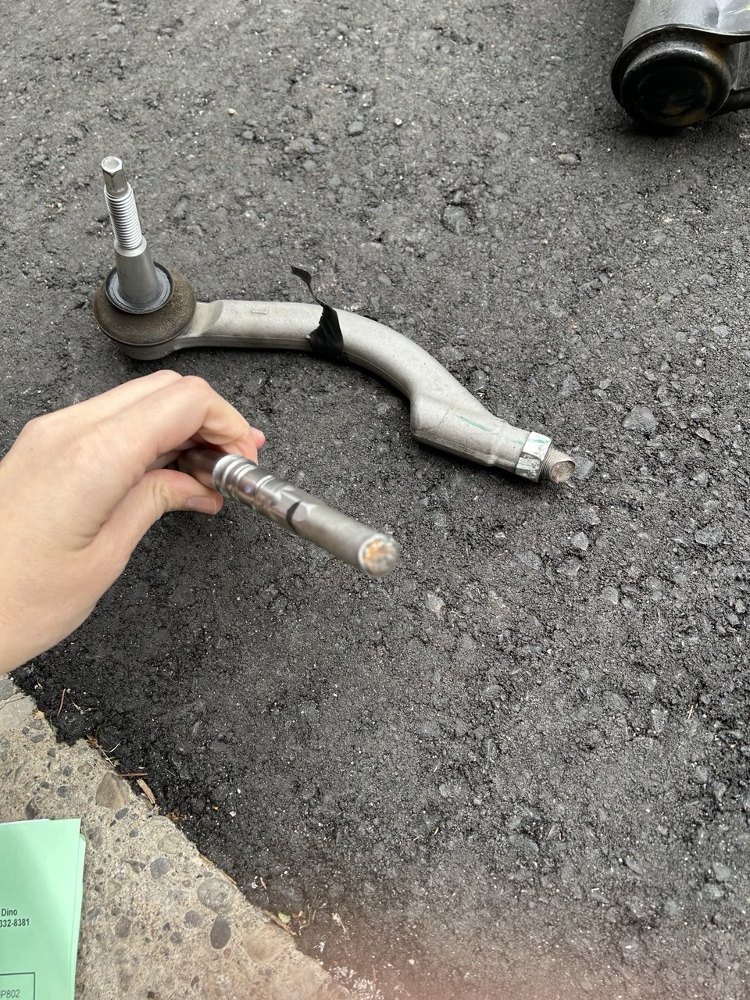
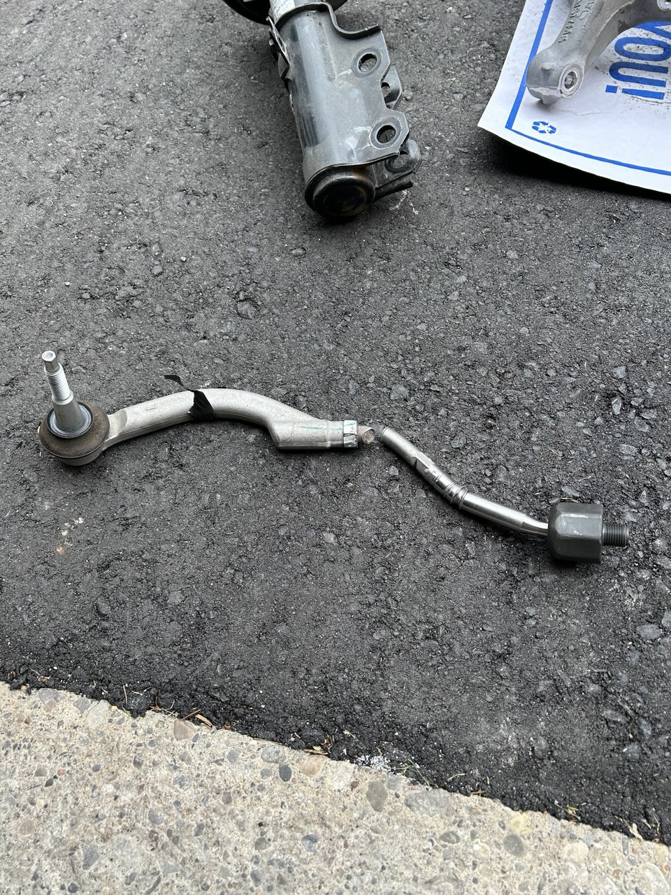
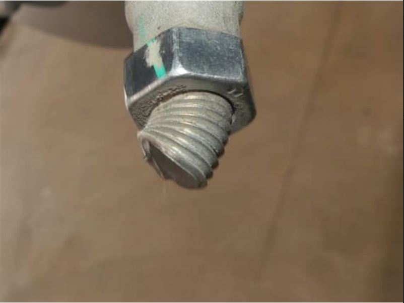
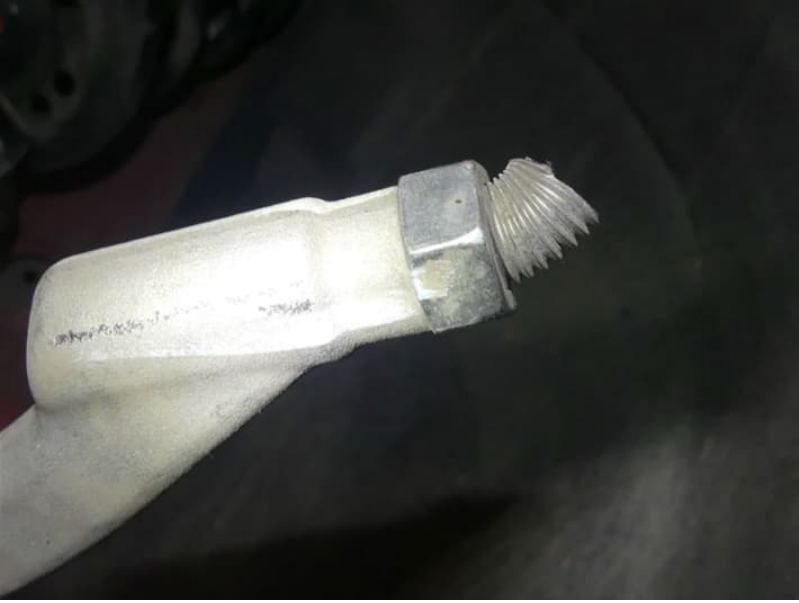
(photos of broken tie rod etc)
CAMVAP hearing
The hearing came. I was with my wife. We drove there on my old Chevy Cruze 2013 because that day was snowing and I still did not have winter tires on my EV because I spent all money on repair and had debts to pay for it. The judge (formally it is a lawyer acting as the judge) started the hearing. From GM there were 2 people: one local manager and Mr. Angelo Peroff. He claimed he is an engineer with more than 15 years (or even more, I don’t remember exactly). We started to describe the story of what happened to my car. We tried to show the video, but they were not willing to see it and did not seem interested. I had to insist to watch. The lawyer acting as the judge tried to stop the video, saying it is not relevant and he does not want to waste time on it. It also looked like he was very tired; a couple of times I saw his eyes closed during the process. After my speech, Mr. Peroff presented his report. He indicated results from Transport Canada, claiming that they determined it is not a defect — which is false. I obtained this report and there was nothing about “not a defect.” There was only that they reported the incident and if similar cases appear, they will investigate further. There was no statement that it was not a defect. The information that they do not want to investigate based on photos was communicated later, but it is not the same as a formal finding of “no defect.” Mr. Peroff read general information about types of material breakage — basic definitions that students learn in a technical university in material resistance. He showed a couple of pictures from the scene that were taken by Chubb. The investigator himself repeated to me many times that he is just gathering information and is not a technical person and does not make decisions. Mr. Peroff said that on these photos, there is some curb that we probably hit and that is why it broke — that was essentially his conclusion. The lawyer acting as the judge asked Mr. Peroff why this report he was presenting was not provided or disclosed to CAMVAP and not to the customer. Mr. Peroff answered that it is internal documentation. The lawyer acting as the judge pointed out that since the report was not disclosed, he would not accept it as evidence. So we were pretty sure it would not matter, and basically GM had no defense. After that, we argued a few minutes with Mr. Peroff. I asked him: did you inspect the car, or did you just see photos after towing? He answered that he does not need to see the car to determine it is not a defect. I asked that if he is acting as a P.Eng he should follow forensic procedures, but he said he has many years of experience so he can make a decision based only on that.
CAMVAP decision
The decision from CAMVAP takes up to 14 days. They sent their decision after 15 days. In the decision, the lawyer acting as the judge stated that the hearing is informal, so he does not need to follow formal legal rules. He accepted the evidence of the GM representative and claimed that we did not prove that it was a defect. But our claim was also about improper towing and unreasonable warranty denial, and they omitted this. They acted like we were only trying to prove it is a defect, completely ignoring that we claimed improper towing, unreasonable warranty denial, part delays, and other aspects. CAMVAP shifted the responsibility to prove the defect onto us. No one considered that we had warranty and the manufacturer should prove misuse or abuse of the vehicle. After the hearing, they all together chatted on social topics, left the room, and walked away. Period.